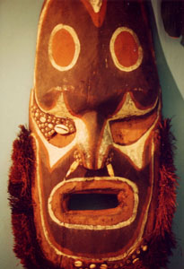

|
第１１ マダン攻略作戦に出動せよ
 第十八軍司令部は見晴らしのよい素敵な洋風の建物の中に陣取っていました。部屋の中を覗いて見たら、参謀肩章をつけた佐官級 の参謀が沢山いて、机で熱心に仕事して居ました。通信参謀は陸軍大尉殿でした。来意を告げると、この通信参謀は、心づかいもや さしく、言葉づかいも柔らかく、色々と細かい指示を与えてくれました。すなわち『昼と夜の周波数は何キロサイクル。マダン・ウエワク・ラバウルの各通信所の呼び出し符号（かたかなの三文字）。交信時間等』 を指示してくれました。尚、通信参謀（中元陸軍大尉）は私に『君にサイドカーを一台やる。今日１日中、サイドカーを自由に使っ てよい。運転手として兵１名をつける』と言った。 この言葉を聴いた時は嬉しくて天にも昇る心地がしました。私は颯爽として意気揚々とサイドカーに乗り込みました。これからが 大変な仕事でした。軍通無線隊は明日の午後五時までに、輸送船（旗艦）に乗船しなければならない。幸い当番兵を連れて来なかっ たので気軽にどこにも行けました。船舶司令部では明日の乗船打ち合わせ、野戦倉庫では食料の受領の打ち合わせ、野戦兵器廠では 通信器材の受領の打ち合わせ等等で目が回る忙しさでした。なにしろ、時間は逼迫している、その上、連絡場所は離れたところに夫 々点在していて、道路は舗装されていない。物凄い土ほこりを立てながら、ラバウルの町中をサイドカーに乗って西に東に走り回っ た。『軍通信隊』としては私が作戦通信の最高指揮官だったので、責任は極めて重大でした。そんな訳で、そのぶんだけ、気分は最 高でした！こんな格好よい颯爽とした凛々しい姿は、その後、二度と再び、私には訪れて来ませんでした。この時点でも、東部ニユ ーギニア方面の戦況は全然判っていませんでしたが、戦は勝っているものと信じていました。 東京陸軍通信学校を卒業してから、今日まで一年半が過ぎていました。小隊長の職務にも馴れ任務にもゆとりが出て来ていました。 軍隊に入隊してからもう四年目になる。そんな訳で、軍隊生活もすっかり板に付いていました。 広島師団・歩兵部隊の花輪支隊（指揮官花輪中佐）の指揮下に入り、『ラバウルとマダン間。ウエワクとマダン間。この二系統の 通信連絡に当たれ』と、いう重大な作戦任務に付いたので、身が引き締まる思いでした。関係ケ所に全部連絡が終り、出動準備が出 来上がりました。 |